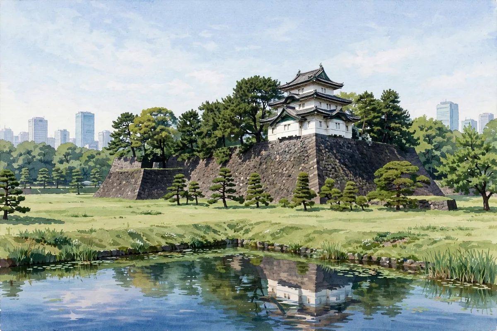

Edo Castle's Layout and Today's Imperial Palace East Gardens: Walking a Great Castle with No Keep

Edo Castle was the headquarters of the Tokugawa shogunate and one of the largest castles in Japan. It is now the Imperial Palace, and the keep itself no longer remains. But walking the Imperial Palace East Gardens, which are open to the public, you can feel its enormous layout with your own body.
【Edo Castle as the Tokugawa Headquarters】Edo Castle was developed on a grand scale after Tokugawa Ieyasu entered Edo, and became the shogun's residence. It was equipped with the Honmaru, Ninomaru and Sannomaru enclosures and the Nishinomaru, ringed by inner and outer moats. The castle town of Edo itself is said to have been structured so that moats and canals defended it.
【The Lost Keep and the Remaining Keep Base】The keep of Edo Castle was lost in the Great Fire of Meireki (1657) and is said never to have been rebuilt afterward. In the East Gardens the stone base of the keep remains, and from its scale you can imagine the keep's size. Looking for the Fujimi Turret, the gates and the marks carved in the stone walls as you walk is another pleasure of the East Gardens.
【Daimyo Gardens and the Honmaru Lawn】In the East Gardens there is the broad lawn of the Honmaru and a section laid out as the Ninomaru Garden. Gardens in the lineage of the old daimyo gardens also remain, and although it is a castle site, it is a place where you can relax as in a park. Walk from gate to gate with a layout map in hand, and the layering of the enclosures gradually becomes clear.
【Exam Study Points】This is a place where the layout knowledge of Chapters 1 and 3 of the textbook is directly useful. The realization that 'you can read a castle even without a keep' becomes strength for walking castle sites in general. Review also why Edo Castle's keep no longer survives.
In the middle of Tokyo there is a castle site this large. Go and walk the East Gardens to taste that surprise.
- Kumamoto Castle's Road to Recovery: From the 2016 Earthquake to the Restored Keep and the Long Way to Full Restoration
- Hikone Castle and the Ii Clan's Castle Town: The National Treasure Keep, Genkyuen Garden and a Walk by Lake Biwa
- Inuyama Castle and the Kiso River: Views of the River and Castle Town from a National Treasure Keep
Recommended books for this article
Castle Guide
Samurai Castles: History / Architecture / Visitors' Guides
Hundreds of color photographs and close-up detail on Japan's most important surviving samurai castles — their history, design and military features, with guidance for visitors. The best single companion for castle sightseeing.
View at Barnes & NobleCheck the price at Barnes & Noble
Castle History
Japanese Castles 1540–1640
Author: Stephen Turnbull
The great castles of Japan's warring-states era: how the strongholds of the daimyo were built, defended and attacked, explained by the leading English-language historian of samurai warfare, with illustrations throughout.
View at Pickwick BookshopCheck the price at Pickwick Bookshop
Travel Guide
Lonely Planet Japan (Travel Guide), 19th Edition
Author: Lonely Planet
The standard Japan travel guide in its 19th edition — trip planning, itineraries, transport and on-the-ground detail. The practical backbone for a castle-and-shrine trip.
View at TargetCheck the price at Target
Book links on this page go to the retailers' product pages. Prices and availability are shown on the retailer's page.